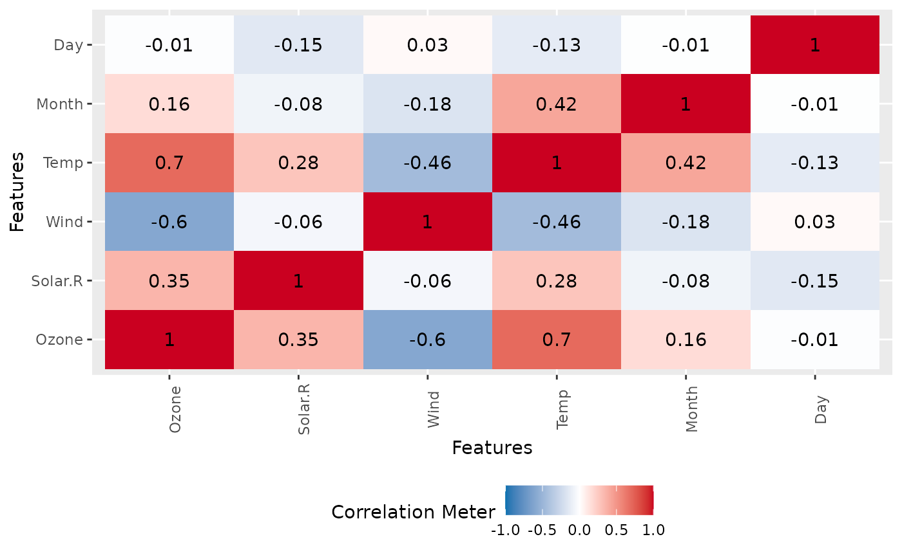

This function creates a correlation heatmap for all discrete categories.
plot_correlation(
data,
type = c("all", "discrete", "continuous"),
maxcat = 20L,
cor_args = list(),
geom_text_args = list(),
title = NULL,
ggtheme = theme_gray(),
theme_config = list(legend.position = "bottom", axis.text.x = element_text(angle = 90))
)input data
column type to be included in correlation calculation. "all" for all columns, "discrete" for discrete features, "continuous" for continuous features.
maximum categories allowed for each discrete feature. The default is 20.
a list of other arguments to cor
a list of other arguments to geom_text
plot title
complete ggplot2 themes. The default is theme_gray.
a list of configurations to be passed to theme.
invisibly return the ggplot object
For discrete features, the function first dummifies all categories, then calculates the correlation matrix (see cor) and plots it.
plot_correlation(iris)
plot_correlation(iris, type = "c")
plot_correlation(airquality, cor_args = list("use" = "pairwise.complete.obs"))
